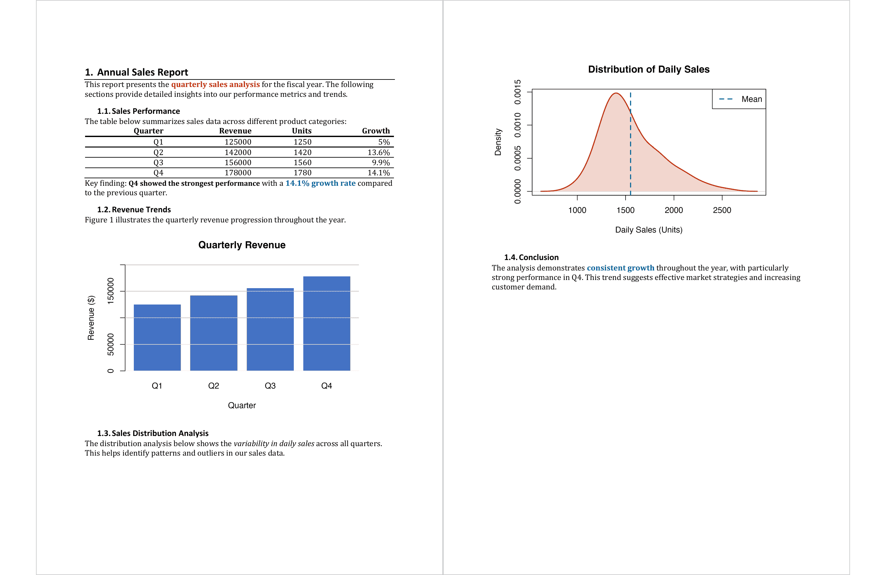

| read_docx {officer} | R Documentation |
read_docx() is the starting point for creating Word documents
from R. It creates an R object representing a Word document that can be
manipulated programmatically. When called without arguments, it creates an
empty document based on a default template. When provided with a path, it
reads an existing Word document (.docx) or template (.dotx) file.
Once created, you can:
Add content from R: Insert text, formatted paragraphs (fpar()),
tables (body_add_table()), plots (body_add_plot()), images,
page breaks, table of contents, and more using the body_add_*() family
of functions.
Read and inspect content: Use docx_summary() to extract and analyze
the document's content, structure, and formatting as a data frame.
Write to file: Save the document to disk using
print(x, target = "path/to/file.docx").
read_docx(path = NULL)
path |
path to the docx file to use as base document.
|
an object of class rdocx.
The template file (specified via path or the default template) determines
the available paragraph styles, character styles, and table styles in your
document. These styles control the appearance of headings, body text, tables,
and other elements.
When you use functions like body_add_par(style = "heading 2"), the style
name must exist in the template. You can:
Use styles_info() to list all available styles in your document
Create a custom template in Word with your organization's styles and branding
Use the default template for standard documents
The document layout (page size, margins, headers and footer content,
orientation) also comes from the
template and can be modified using body_set_default_section() or by
adding section breaks with body_end_section_continuous() and related functions.

Save a 'Word' document object to a file with print.rdocx(),
add content with functions body_add_par(), body_add_plot(),
body_add_table(), change settings with docx_set_settings(), set
properties with set_doc_properties(), read 'Word' styles with
styles_info().
library(officer)
# This example demonstrates how to create
# an empty document -----
## Create a new Word document
doc <- read_docx()
## Save the document
output_file <- print(doc, target = tempfile(fileext = ".docx"))
# This example demonstrates how to create a document
# with text, formatted paragraphs, tables, and plots ----
# organized in sections
# Create a new Word document
doc <- read_docx()
# Add main title
doc <- body_add_par(doc, "Annual Sales Report", style = "heading 1")
# Add introduction with formatted text using fpar
intro_text <- fpar(
"This report presents the ",
ftext(
"quarterly sales analysis",
fp_text_lite(bold = TRUE, color = "#C32900")
),
" for the fiscal year. The following sections provide detailed insights ",
"into our performance metrics and trends."
)
doc <- body_add_fpar(doc, intro_text)
## Section 1: Sales Data ----
doc <- body_add_par(doc, "Sales Performance", style = "heading 2")
# Add descriptive text
doc <- body_add_par(
doc,
"The table below summarizes sales data across different product categories:"
)
# Create and add a data frame as a table
sales_data <- data.frame(
Quarter = c("Q1", "Q2", "Q3", "Q4"),
Revenue = c(125000, 142000, 156000, 178000),
Units = c(1250, 1420, 1560, 1780),
Growth = c("5%", "13.6%", "9.9%", "14.1%"),
stringsAsFactors = FALSE
)
doc <- body_add_table(doc, value = sales_data, style = "table_template")
# Add commentary with multiple formatted text elements
comment <- fpar(
"Key finding: ",
ftext(
"Q4 showed the strongest performance",
fp_text_lite(bold = TRUE, font.size = 11)
),
" with a ",
ftext("14.1% growth rate", fp_text_lite(color = "#006699", bold = TRUE)),
" compared to the previous quarter."
)
doc <- body_add_fpar(doc, comment)
## Section 2: Visualizations ----
doc <- body_add_par(doc, "Revenue Trends", style = "heading 2")
# Add explanatory text
doc <- body_add_par(
doc,
"Figure 1 illustrates the quarterly revenue progression throughout the year."
)
# Create a plot showing revenue trends
revenue_plot <- plot_instr({
quarters <- c("Q1", "Q2", "Q3", "Q4")
revenue <- c(125000, 142000, 156000, 178000)
barplot(
revenue,
names.arg = quarters,
col = "#4472C4",
border = NA,
main = "Quarterly Revenue",
ylab = "Revenue ($)",
xlab = "Quarter",
ylim = c(0, 200000)
)
grid(nx = NA, ny = NULL, col = "gray90", lty = 1)
})
doc <- body_add_plot(doc, revenue_plot, width = 6, height = 4)
# Add another section with a different plot
doc <- body_add_par(doc, "Sales Distribution Analysis", style = "heading 2")
# Add context for the second plot
analysis_intro <- fpar(
"The distribution analysis below shows the ",
ftext("variability in daily sales", fp_text_lite(italic = TRUE)),
" across all quarters. This helps identify patterns and outliers in our sales data."
)
doc <- body_add_fpar(doc, analysis_intro)
# Create a density plot
distribution_plot <- plot_instr({
# Simulate daily sales data
set.seed(123)
daily_sales <- c(
rnorm(90, mean = 1400, sd = 200), # Q1-Q3
rnorm(30, mean = 2000, sd = 250) # Q4 (higher mean)
)
plot(
density(daily_sales),
main = "Distribution of Daily Sales",
xlab = "Daily Sales (Units)",
ylab = "Density",
col = "#C32900",
lwd = 2
)
polygon(density(daily_sales), col = rgb(0.76, 0.16, 0, 0.2), border = NA)
abline(v = mean(daily_sales), col = "#006699", lwd = 2, lty = 2)
legend("topright", legend = "Mean", col = "#006699", lty = 2, lwd = 2)
})
doc <- body_add_plot(doc, distribution_plot, width = 6, height = 4)
# Add concluding remarks
doc <- body_add_par(doc, "Conclusion", style = "heading 2")
conclusion <- fpar(
"The analysis demonstrates ",
ftext("consistent growth", fp_text_lite(bold = TRUE, color = "#006699")),
" throughout the year, with particularly strong performance in Q4. ",
"This trend suggests effective market strategies and increasing customer demand."
)
doc <- body_add_fpar(doc, conclusion)
# Save the document
comprehensive_file <- print(doc, target = tempfile(fileext = ".docx"))
# Using a custom template ----
# This example shows how to start from an existing template
# instead of creating a blank document
# Get the path to a landscape template included in the package
template <- system.file(package = "officer", "doc_examples", "landscape.docx")
# Create a document based on the template
# The document will inherit the template's styles and page settings
doc_2 <- read_docx(path = template)
# Add a section with a table
doc_2 <- body_add_par(doc_2, "Motor Trend Car Data", style = "heading 2")
doc_2 <- body_add_table(doc_2, value = head(mtcars))
# Add a section with a plot
doc_2 <- body_add_par(doc_2, "Sales Distribution", style = "heading 2")
doc_2 <- body_add_plot(doc_2, distribution_plot)
# Save the document
docx_file_output <- print(doc_2, target = tempfile(fileext = ".docx"))